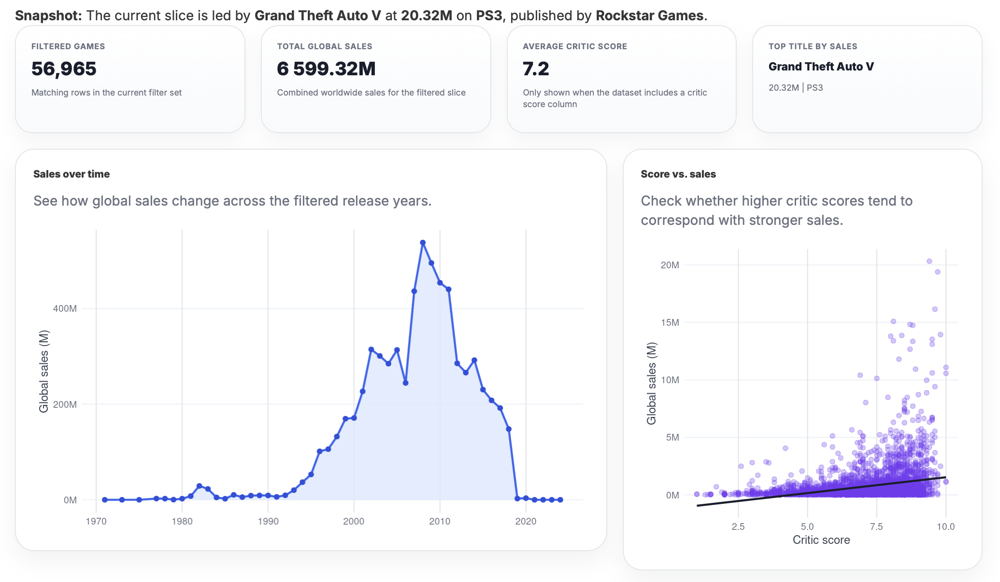
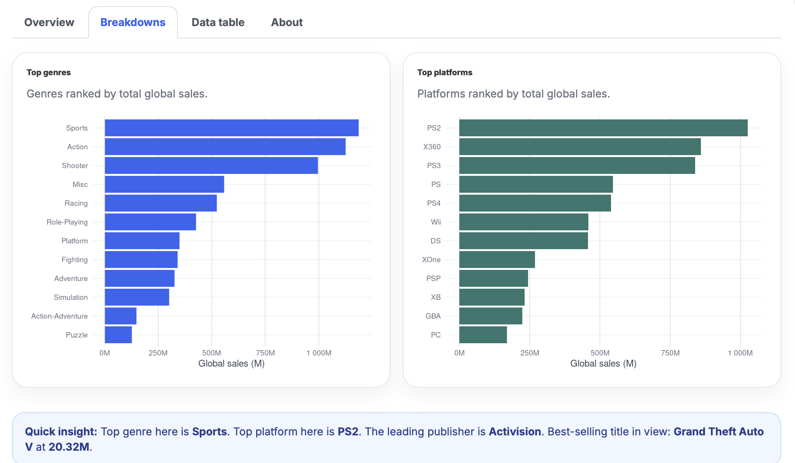

Original game
S3QUENCE
A 2D arcade-combat game built around timed directional sequences, dungeon rooms, and run upgrades.
- Java
- Swing
- Java2D
- SDL
Code
I am a Computer Science student at Arizona State University. I build software, interactive experiences, tools, and games — often in conversation with the same worlds I draw. S3QUENCE is the original game below. Featured applications and the graphics experiments follow it.
Original game
A 2D arcade-combat game built around timed directional sequences, dungeon rooms, and run upgrades.
Applications
Standalone applications and systems work. Each one is a complete project you can explore and learn about.


Launch live appInteractive dashboard
An R/Shiny dashboard for more than 64,000 video game sales records from 1971 to 2024. Filter the set, search by title, rank the results, and export a CSV. KPI cards, sales trends, platform and genre breakdowns, and a critic-score-versus-sales plot all update from the same filters.
Interactive Graphics
Four WebGL programs written in plain JavaScript and GLSL, with no engine or framework. They began as coursework for CSE 470, Computer Graphics at Arizona State University. Pick one and launch it: each runs live in the page.

 Launch demo
Launch demo
A flower made of 32 solid-colored triangles that bursts apart and fades to white while its core holds still. The motion and the color change are both computed in the vertex shader.

 Launch demo
Launch demo
One cube model drawn as a ring of spinning instances around a center cube. Click an outer cube and the center cube picks up its rotation axis, then tune scale, speed, cube count, and color.

 Launch demo
Launch demo
A cylinder and a wavy vase generated from curves, with exact normals and per-pixel Phong lighting. Orbit them, swap materials, move the light, and push the shininess from matte to mirror.

 Launch demo
Launch demo
A Yoshi-inspired dinosaur built from copies of a single cube and animated through a hierarchical model, walking a looping path across a textured ground plane.
More to come
More application and systems work will join Featured Projects as it is ready. Current code lives on GitHub.